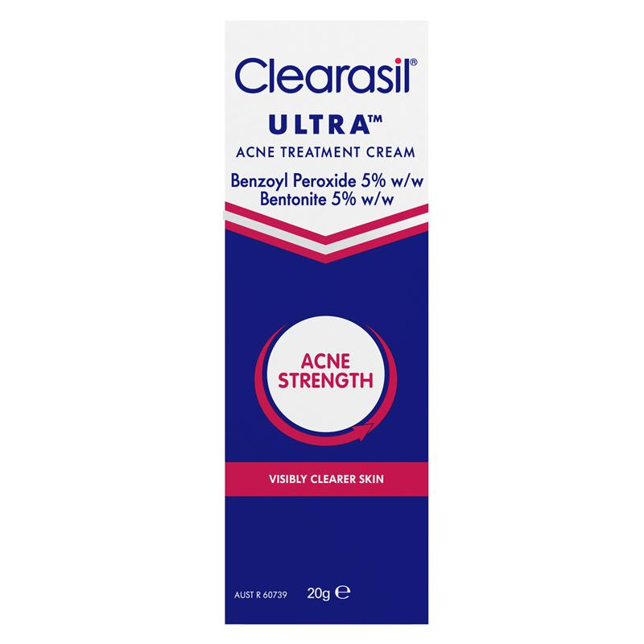

Clearasil
Clearasil Ultra Acne Treatment Cream 20g
Ingredient Analysis (10 ingredients)
Safe
Antibacterial agent. Not specifically antifungal but creates oxidative environment unfavorable to yeast. Safe for Malassezia-prone skin but can be drying/irritating.
Safe
Another name for carboxymethyl cellulose; thickener. Cellulose derivative, not a lipid source.
Avoid - feeds Malassezia
Glyceryl ester with stearic acid (C18). Contains C18 fatty acid ester that Malassezia can hydrolyze.
Avoid - feeds Malassezia
C14 ester. Malassezia can hydrolyze this ester and utilize the myristic acid (C14) as food. Confirmed trigger for fungal acne.
Safe
Preservative with antifungal properties. Actually inhibits Malassezia growth rather than feeding it. Safe for seb-derm.
Safe
Preservative with antifungal properties. Shows enhanced effectiveness against fungi. Safe for Malassezia-prone skin.